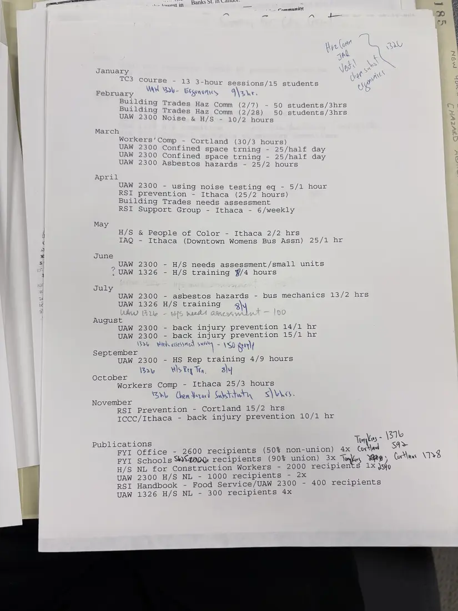
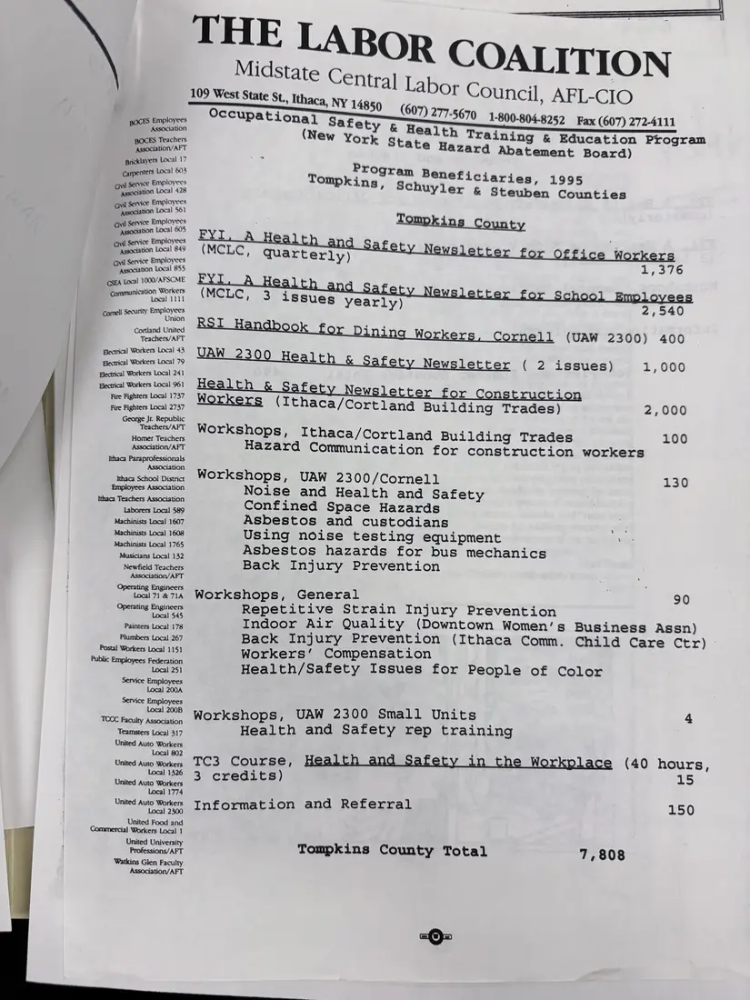

Report, 2 pages
Health and safety program activities and beneficiaries, 1995
1995Date inferred
A month-by-month list of the year's courses, workshops, and publications, with handwritten counts, and the “Program Beneficiaries, 1995” sheet for Tompkins County: the FYI newsletters for office workers and school employees, an RSI handbook for Cornell dining workers, newsletters for UAW Local 2300 and construction workers, and workshops, for a county total of 7,808.
A second photograph of the beneficiaries sheet is not shown.
Download or cite this itemPages


(open zoom view)Read the page text (machine-read, contains errors)
This text was generated automatically from the photograph and has not been corrected. The image is the authoritative record.
Yi ue MGs ; ae “ KS Walt: LAVEStith Banks ot. Il Ye 5 S Community; January AMO) (olmypht rse 13 3-hour sessions/15 students February WWE BU- Etsononyes, O\a he Buildi C Buiidine Broaee Haz Comm (2/7) - 50 students/3hrs Bi oak ‘rades Haz Comm (2/28) 50 students/3hrs 300 Noise & H/S - 10/2 hours March ata ts Whe - Cortland (30/3 hours) oe ged Confined space trning - 25/half day ee + Confined space trning - 25/half day 2300 Asbestos hazards - 25/2 hours April ue 2300 = using noise testing eq - 5/1 hour ae prevention - Ithaca (25/2 hours) anal Trades needs assessment SI Support Group - Ithaca - 6/weekly May H/S & People of Color - Ithaca 2/2 hrs IAQ - Ithaca (Downtown Womens Bus Assn) 25/1 hr June UAW 2300 - H/S needs assessment/small units UAW 1326 - H/S training $/4 hours July UAW 2300 - asbestos hazards - bus mechanics 13/2 hrs August UAW UAW UAW 1326 H/S training 3) 2300 - back injury prevention 14/1 hr 2300 - back injury prevention 15/1 hr man a hie CA VEIL Waele assessetedl suv — Ww September ) ‘30 Nal UAW 2300 - HS Rep training 4/9 hours V2 Ws Fey Wn, 3\y October Workers Comp - Ithaca 25/3 hours yee) | rc NN Ne me Chon Year) Sebsttwin, — S\WAcs. RSI Prevention - Cortland 15/2 hrs IccC/Ithaca - back injury prevention 10/1 hr Publications Tries 131% FYI Office - 2600 recipients (50% non-union) 4x Covr\a Subs FYI Schools SWS4a0Q: recipients (90% union) 3x Th Vas, Yay Coc\nus \n% mes 1x sto roe H/S NL tor Construction Workers - 2000 recipie i UAW 2300 H/S NL - 1000 recipients - 2x q RSI Handbook - Food Service/UAW 2300 - 400 recipients UAW 1326 H/S NL - 300 recipients 4x


(open zoom view)Read the page text (machine-read, contains errors)
This text was generated automatically from the photograph and has not been corrected. The image is the authoritative record.
Midstate Centr ar COALITION Ithaca, NY 14959 Or Council, AFL-CIO BOCES Employees Occupational Safety ¢ £07) 277-5670 1-800-804-8252 Fax (607) 272-4111 ssociation Hea 1 th rn Reacher (New Yor Training & Education Program BOCES Teachers k State Hazard Abatement Board) ‘Associatior/AFT Program Benefi Bricklayers Local 17 Carpenters Local 603 ; Tompkins, Schuyler 4] Service Employees erection Local 428 i] Service Employees Gvil ca tion Local 561 Ciaries, 1995 & Steuben Counties nil Service Employees Tompkins County Association Local 605 | Service Employees Bo srsation Local 849 (MCLC, quarterly) Givil Service Employees a sesce Boles 1,376 CSEA Local OO0/AFSCME Eom (MCLC, 3 issues yearly) 2,540 Bred eeorey Brelcyees Seae/ArT D nell (UAW 2300) 400 i rkers Local 43 Smciveres aly UAW 2300 Health fety Newsletter ( 2 issues) 1,000 Electrical Workers Local 241 Blectrical Workers Local 961 H 1 h ie New i x r n r aie Workers (Ithaca/Cortland Building Trades) 2,000 George Jr. Republic news Workshops, Ithaca/Cortland Building Trades 100 y Association/AFT Hazard Communication for construction workers 7 Ey gpeencienn f maa Sceoi one WOrkshops, UAW 2300/Cornell 130 SEP RSH LEESEEEL Noise and Health and Safety Ithaca Teachers Association Confined Space Hazards Asbestos and custodians “ Using noise testing equipment , Asbestos hazards for bus mechanics Back Injury Prevention Laborers Local 589 Machinists Local 1607 Machinists Local 1608 Machinists Local 1765 Musicians Local 132 Newfield Teachers Association/AFT paisa Workshops, General 90 Operating Engineers Repetitive Strain Injury Prevention Painters Local 178 Plumbers Local 267 Postal Workers Local 1151 Public Employees Federation Local 251 Service Employees Local 200A TCCC Faculty Association Teamsters Local 317 United Auto Workers Local 802 United Auto Workers 1 1326 United Auto Workers Local 1774 United Auto Workers Local 2300 United Food and ial Workers Local 1 United University Professions/AFT Watkins Glen Faculty Association/AFT Indoor Air Quality (Downtown Women’s Business Assn) Back Injury Prevention (Ithaca Comm. Child Care Ctr) Workers’ Compensation Health/Safety Issues for People of Color Workshops, UAW 2300 Small Units 4 Health and Safety rep training TC3 Course, Health and Safety in the Workplace (40 hours, 3 credits) 15 Information and Referral 150 Tompkins County Total 7,808
See something wrong, or recognize a person or event? Send a correction. If you hold rights in this item or think it should not be public, write to the same address.